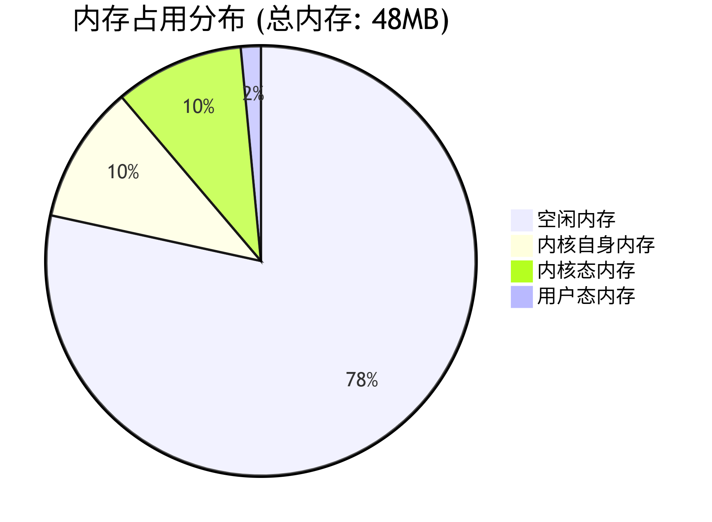

小型化特性
小型化分为二进制小型化和内存小型化，有些应用场景对镜像二进制大小有严格的限制，而有些应用场景则对系统OS的运行内存有着严格的限制。openEuler Embedded在小型化方面专门针对内存受限环境做了很多研究，这其中包括编译链的优化对比、内核的精简化裁剪、文件系统的精简、系统文件挂载的优化。
我们在OEE已支持的hipico单板上进行的研究，采用clang+musl编译链，小型化内存数据如下：
OS裁剪 |
|
|---|---|
物理可用内存 |
48M |
总使用内存 |
10.97M |
内核自身内存 |
4.98M |
内核态内存 |
2.96M |
用户态内存 |
0.722M |

内核态内存定义：SUnreclaim(不可回收)+KernelStack(内核栈)+PageTables(页表)+VmallocUsed(已分配内存)+Percpu(CPU缓存)
用户态内存定义：Active(活动内存)+Inactive(不活动内存)
二进制小型化数据：
组件 |
大小 |
|---|---|
内核二进制 |
1.4M |
根文件二进制 |
3.79M |
编译链的优化对比
编译链对比
gcc与clang的对比
GCC原名是GNU C Compiler，是GNU项目的C语言编译器，其功能强大。
支持语言
C、C++、Fortran、Pascal、Objective-C、Java、Ada、Go等。
跨平台与兼容性
操作系统：Linux、Windows、macOS等。
硬件架构：X86、ARM等多种CPU指令集。
Linux内核等开源项目的准编译器。
核心优点
多语言支持： 支持多种编程语言,如C、C++、Fortran、Pascal、Objective-C、Java、Ada、Go等。
跨平台性： GCC编译器能够在不同的操作系统和硬件平台上编译和运行代码，确保了代码的高度可移植性。
性能优化： GCC编译器内置了多种优化策略，可以根据不同的编译选项进行代码优化，从而提升程序的运行效率。
功能丰富： 编译时可生成调试信息，便于开发者进行调试。并提供了广泛的编译选项和扩展功能，以满足不同开发者的需求。
社区支持： GCC编译器是一个开源项目，有一个活跃的社区支持，开发者可以从社区获取帮助、分享经验和贡献代码。
Clang是一个由 LLVM 项目开发的 C、C++、Objective-C 等编程语言的编译器前端。它旨在提供更快的编译速度、更好的错误报告及与GCC兼容的编译器驱动程序。Clang 是 LLVM 编译器基础设施的一部分，通常与 LLVM 后端一起使用来生成机器代码。Clang的主要特点包括：
核心特点
高效性：编译速度更快，内存占用低于GCC。
友好诊断：提供清晰详尽的错误/警告信息。
GCC兼容性：支持多数GCC选项，便于迁移。
模块化架构：易于扩展和集成到其他工具链。
现代语言支持：适配最新C++标准等特性。
工具生态
静态分析工具（clang-tidy）
代码格式化工具（clang-format）
重构工具等，提升代码质量与开发效率。
glibc与musl的对比
glibc是GNU C Library（glibc），GNU项目的C/C++标准库实现。
核心特性
功能全面：支持国际化、本地化、调试及性能优化等扩展功能
高兼容性：广泛遵循各类标准，适配多架构（如x86/ARM）和操作系统
Linux默认：主流Linux系统的标准C库
设计权衡
优势：功能丰富，兼容性强
代价：代码量大导致编译速度慢，依赖项较多
musl是一个轻量级C/C++标准库，注重代码质量和安全性。
核心特性
高效：代码精简，编译速度快，无额外依赖。
嵌入式友好：适合资源受限场景（如嵌入式系统）。
关键优势：静态链接、实时性、内存高效、源码级兼容性。
发展现状
活跃开源项目，拥有积极开发者社区。
已被多个Linux发行版采用，如Alpine Linux、Arch Linux等。
优势
代码量小：相比glibc，musl的代码量更少，编译速度更快。
内存占用低：musl的静态链接特性使得生成的可执行文件占用的内存更少。
安全性高：musl的设计注重安全性，避免了一些glibc中的安全问题。
兼容性好：musl支持大多数的C标准库函数，并且与glibc兼容。
编译链的制作
前置条件准备（可选手动或自动下载）
制作clang+musl ARM32交叉编译链前，需要准备以下前置条件：
准备32位gcc+musl编译链
可以直接从openEuler Embedded的源码仓发布件下载，发布件名称为openeuler_gcc_arm32le-musl，该编译链在后续步骤中作为compiler-rt和libunwind的交叉编译基础运行时库使用。
准备编译链源码
llvm-project源码为：https://atomgit.com/openeuler/llvm-project 这里我们选用dev_19.1.7版本,执行以下命令下载llvm-project源码：
git clone https://atomgit.com/openeuler/llvm-project.git -b dev_19.1.7 --depth=1musl源码为：https://atomgit.com/src-openeuler/musl.git，这里我们参考manifest.yaml中的musl版本，执行以下命令下载musl源码：
git init openeuler-musl cd openeuler-musl git remote add origin https://atomgit.com/src-openeuler/musl.git git fetch origin <version> --depth=1 git checkout <version>
方式一：使用脚本一键下载并制作（推荐）
openEuler Embedded提供了完整的编译链制作工具链，位于 yocto-meta-openeuler 代码仓的 .oebuild/arm32-clang-musl-toolchain/ 目录下，可自动完成前置依赖下载和编译链构建，无需手动操作。
下载前置依赖
运行
prepare.sh可自动下载32位gcc+musl编译链（分块文件自动合并解压）、llvm-project源码、musl源码：sh arm32-clang-musl-toolchain/prepare.sh <work_dir>其中
<work_dir>为工作目录，所有依赖将下载到该目录下的open_source/子目录中。若不指定，默认使用脚本所在目录。所有版本参数（gcc-musl分块数量、llvm分支、musl commit hash等）集中在
configs/config.xml中管理，便于后续版本更新。
构建编译链
前置依赖下载完成后，运行
build-llvm-musl-arm32.sh一键构建：cd <work_dir> ./arm32-clang-musl-toolchain/build-llvm-musl-arm32.sh all \ --gcc-dir ./open_source/openeuler_gcc_arm32le-musl \ --llvm-src ./open_source/llvm-project \ --musl-src ./open_source/openeuler-musl/ \ --output-dir ./toolchain
构建完成后，编译链安装在 <work_dir>/toolchain/llvm-musl-arm/ 目录下。
build-llvm-musl-arm32.sh会自动完成以下7个步骤：
检查前置条件（cmake、ninja等）
拷贝源码到输出目录并应用compiler-rt和libunwind补丁
构建LLVM/Clang/LLD
构建compiler-rt（ARM运行时库）
构建libunwind（ARM异常处理库）
构建musl C库
设置sysroot、创建符号链接、验证编译链
更详细的使用说明请参考
.oebuild/arm32-clang-musl-toolchain/README.md。
方式二：手动逐步制作
后续步骤中，设定安装目录为
<toolchain-dir>（如/home/user/toolchain/llvm-musl-arm），设定gcc-musl编译链目录为<gcc-musl-dir>（如./openeuler_gcc_arm32le-musl），请根据实际路径替换。
单步编译LLVM/Clang/LLD
cd llvm-project mkdir build-llvm cd build-llvm cmake -G Ninja ../llvm \ -DCMAKE_BUILD_TYPE=Release \ -DLLVM_ENABLE_PROJECTS="clang;lld" \ -DLLVM_TARGETS_TO_BUILD="ARM" \ -DLLVM_DEFAULT_TARGET_TRIPLE=arm-openeuler-linux-musleabi \ -DCMAKE_INSTALL_PREFIX=<toolchain-dir> \ -DLLVM_ENABLE_RTTI=ON \ -DLLVM_ENABLE_TERMINFO=OFF \ -DLLVM_ENABLE_LIBXML2=OFF \ -DLLVM_ENABLE_ZLIB=OFF \ -DLLVM_ENABLE_ZSTD=OFF \ -DLLVM_BUILD_UTILS=OFF \ -DLLVM_BUILD_TESTS=OFF \ -DLLVM_INCLUDE_TESTS=OFF \ -DLLVM_INCLUDE_BENCHMARKS=OFF \ -DLLVM_INCLUDE_DOCS=OFF \ -DLLVM_INCLUDE_EXAMPLES=OFF \ -DCLANG_ENABLE_ARCMT=OFF \ -DCLANG_ENABLE_STATIC_ANALYZER=OFF \ -DCLANG_INCLUDE_TESTS=OFF \ -DLLVM_ENABLE_PIC=ON cmake --build . -j$(nproc) cmake --install .将clang编译器加入到PATH路径中，例如：
export PATH=<toolchain-dir>/bin:$PATH
修改compiler-rt源码并编译
musl libc不提供单独的stat64结构体，在设定_FILE_OFFSET_BITS=64时，musl的<sys/stat.h>中的stat就是64位版本，因此需要将compiler-rt中sanitizer相关的stat64调用改为stat。
修改
sanitizer_platform_limits_posix.h，在SANITIZER_HAS_STAT64和SANITIZER_HAS_STATFS64的条件判断中，为非glibc/Android平台添加置0的分支：// 原代码： #elif SANITIZER_GLIBC || SANITIZER_ANDROID #define SANITIZER_HAS_STAT64 1 #define SANITIZER_HAS_STATFS64 1 #endif // 修改为： #elif SANITIZER_GLIBC || SANITIZER_ANDROID #define SANITIZER_HAS_STAT64 1 #define SANITIZER_HAS_STATFS64 1 #else #define SANITIZER_HAS_STAT64 0 #define SANITIZER_HAS_STATFS64 0 #endif修改
sanitizer_linux.cpp，将所有stat64相关调用替换为stat：
删除
stat64_to_stat函数定义将
internal_stat中的fstatat64系统调用替换为stat系统调用将
internal_lstat中的fstatat64系统调用替换为lstat系统调用将
internal_fstat中的fstat64系统调用替换为fstat系统调用编译compiler-rt需要用到gcc的运行时库，前面准备好的32位gcc+musl编译链在此使用。注意编译ARM32目标时
CMAKE_SIZEOF_VOID_P应设为4（而非8），且编译参数需包含--target、--sysroot、--gcc-toolchain以正确指定交叉编译目标：cd llvm-project mkdir build-compiler-rt cd build-compiler-rt cmake -G Ninja ../compiler-rt \ -DCOMPILER_RT_BUILD_BUILTINS=ON \ -DCOMPILER_RT_INCLUDE_TESTS=OFF \ -DCOMPILER_RT_BUILD_SANITIZERS=OFF \ -DCOMPILER_RT_BUILD_XRAY=OFF \ -DCOMPILER_RT_BUILD_LIBFUZZER=OFF \ -DCOMPILER_RT_BUILD_PROFILE=OFF \ -DCOMPILER_RT_BUILD_MEMPROF=OFF \ -DCOMPILER_RT_DEFAULT_TARGET_ONLY=ON \ -DCMAKE_C_COMPILER=<toolchain-dir>/bin/clang \ -DCMAKE_CXX_COMPILER=<toolchain-dir>/bin/clang++ \ -DCMAKE_AR=<toolchain-dir>/bin/llvm-ar \ -DCMAKE_NM=<toolchain-dir>/bin/llvm-nm \ -DCMAKE_RANLIB=<toolchain-dir>/bin/llvm-ranlib \ -DCMAKE_LINKER=<toolchain-dir>/bin/ld.lld \ -DCMAKE_C_COMPILER_TARGET="arm-openeuler-linux-musleabi" \ -DCMAKE_C_FLAGS="--target=arm-openeuler-linux-musleabi --sysroot=<gcc-musl-dir>/arm-openeuler-linux-musleabi/sysroot --gcc-toolchain=<gcc-musl-dir> -march=armv7-a -mfpu=vfpv3-d16 -mfloat-abi=hard -fuse-ld=lld" \ -DCMAKE_CXX_FLAGS="--target=arm-openeuler-linux-musleabi --sysroot=<gcc-musl-dir>/arm-openeuler-linux-musleabi/sysroot --gcc-toolchain=<gcc-musl-dir> -march=armv7-a -mfpu=vfpv3-d16 -mfloat-abi=hard -fuse-ld=lld" \ -DCMAKE_ASM_FLAGS="--target=arm-openeuler-linux-musleabi -march=armv7-a -mfpu=vfpv3-d16 -mfloat-abi=hard" \ -DCMAKE_EXE_LINKER_FLAGS="-fuse-ld=lld" \ -DCMAKE_INSTALL_PREFIX=<toolchain-dir> \ -DCMAKE_BUILD_TYPE=Release \ -DLLVM_CONFIG_PATH=<toolchain-dir>/bin/llvm-config cmake --build . -j$(nproc) cmake --install .将compiler-rt builtins库复制到clang资源目录：
mkdir -p <toolchain-dir>/lib/clang/19/lib/arm-openeuler-linux-musleabi cp <toolchain-dir>/lib/linux/libclang_rt.builtins-arm.a \ <toolchain-dir>/lib/clang/19/lib/arm-openeuler-linux-musleabi/libclang_rt.builtins.a
编译musl
首先解压musl源码tar包：
cd openeuler-musl tar xzf musl-1.2.4.tar.gz创建交叉编译器符号链接，并将工具链bin目录加入PATH：
cd <toolchain-dir>/bin ln -sf clang arm-openeuler-linux-musleabi-clang ln -sf clang++ arm-openeuler-linux-musleabi-clang++ ln -sf clang-cpp arm-openeuler-linux-musleabi-clang-cpp ln -sf lld arm-openeuler-linux-musleabi-ld ln -sf lld arm-openeuler-linux-musleabi-ld.lld ln -sf llvm-ar arm-openeuler-linux-musleabi-ar ln -sf llvm-nm arm-openeuler-linux-musleabi-nm ln -sf llvm-objcopy arm-openeuler-linux-musleabi-objcopy ln -sf llvm-objdump arm-openeuler-linux-musleabi-objdump ln -sf llvm-ranlib arm-openeuler-linux-musleabi-ranlib ln -sf llvm-readelf arm-openeuler-linux-musleabi-readelf ln -sf llvm-strip arm-openeuler-linux-musleabi-strip ln -sf llvm-strings arm-openeuler-linux-musleabi-strings export PATH=<toolchain-dir>/bin:$PATH编译musl时CC参数需包含
--target、-march、-mfpu、-mfloat-abi、-rtlib=compiler-rt和-fuse-ld=lld，以正确指定交叉编译目标和运行时库：mkdir build-musl cd build-musl CC="<toolchain-dir>/bin/clang --target=arm-openeuler-linux-musleabi -march=armv7-a -mfpu=vfpv3-d16 -mfloat-abi=hard -rtlib=compiler-rt -fuse-ld=lld" \ ../musl-1.2.4/configure \ --target=arm-openeuler-linux-musleabi \ --prefix=/usr \ --disable-wrapper \ --enable-static \ --enable-shared make -j$(nproc) make DESTDIR=<toolchain-dir>/arm-openeuler-linux-musleabi/sysroot install
编译libunwind
编译libunwind需要应用两个补丁：
补丁1：在
libunwind/CMakeLists.txt中添加LIBUNWIND_ENABLE_ASSEMBLY选项，在LIBUNWIND_ENABLE_FRAME_APIS选项行后添加：option(LIBUNWIND_ENABLE_ASSEMBLY "Enable assembly support" ON)补丁2：在
libunwind/src/CMakeLists.txt文件首行添加enable_language(ASM)以启用ASM语言支持。Warning
重要：切勿在
libunwind/src/CMakeLists.txt中使用set(CMAKE_C_FLAGS "...")或set(CMAKE_CXX_FLAGS "...")来设置ARM编译选项。这些set()调用会覆盖通过-DCMAKE_C_FLAGS/-DCMAKE_CXX_FLAGS命令行传入的交叉编译参数（--target、--sysroot、--gcc-toolchain），导致编译器回退使用宿主机的系统头文件，产生架构不兼容错误。ARM相关编译选项应通过cmake命令行的-DCMAKE_C_FLAGS/-DCMAKE_CXX_FLAGS参数传入。同时注意：libunwind的
CMAKE_CXX_FLAGS中应使用-nostdinc++（仅排除C++标准库头文件），而**不要**使用-nostdinc（会排除所有标准C头文件包括stdint.h、assert.h等）。因为--target+--sysroot+--gcc-toolchain已能正确将C头文件搜索重定向到目标sysroot，无需-nostdinc。执行libunwind编译命令：
mkdir build-libunwind cd build-libunwind cmake -G Ninja ../libunwind \ -DCMAKE_C_COMPILER=<toolchain-dir>/bin/clang \ -DCMAKE_CXX_COMPILER=<toolchain-dir>/bin/clang++ \ -DCMAKE_AR=<toolchain-dir>/bin/llvm-ar \ -DCMAKE_NM=<toolchain-dir>/bin/llvm-nm \ -DCMAKE_RANLIB=<toolchain-dir>/bin/llvm-ranlib \ -DCMAKE_LINKER=<toolchain-dir>/bin/ld.lld \ -DCMAKE_C_FLAGS="--target=arm-openeuler-linux-musleabi --sysroot=<gcc-musl-dir>/arm-openeuler-linux-musleabi/sysroot --gcc-toolchain=<gcc-musl-dir> -march=armv7-a -mfpu=vfpv3-d16 -mfloat-abi=hard -D_LIBUNWIND_IS_BAREMETAL=1 -fuse-ld=lld" \ -DCMAKE_CXX_FLAGS="--target=arm-openeuler-linux-musleabi --sysroot=<gcc-musl-dir>/arm-openeuler-linux-musleabi/sysroot --gcc-toolchain=<gcc-musl-dir> -march=armv7-a -mfpu=vfpv3-d16 -mfloat-abi=hard -D_LIBUNWIND_IS_BAREMETAL=1 -nostdinc++ -fuse-ld=lld" \ -DCMAKE_EXE_LINKER_FLAGS="-fuse-ld=lld" \ -DCMAKE_INSTALL_PREFIX=<toolchain-dir> \ -DCMAKE_BUILD_TYPE=Release \ -DLIBUNWIND_ENABLE_SHARED=ON \ -DLIBUNWIND_ENABLE_STATIC=ON \ -DLIBUNWIND_ENABLE_CROSS_UNWINDING=ON \ -DLIBUNWIND_ENABLE_ARM_WMMX=OFF \ -DLIBUNWIND_ENABLE_ASSEMBLY=ON \ -DLIBUNWIND_USE_COMPILER_RT=ON \ -DLIBUNWIND_INSTALL_HEADERS=ON \ -DLLVM_PATH=<llvm-project-src-dir> \ -DLLVM_ENABLE_RTTI=ON cmake --build . -j$(nproc) cmake --install .
设置sysroot
将gcc运行时库、头文件复制到工具链sysroot中：
GCC_VERSION=$(ls <gcc-musl-dir>/lib/gcc/arm-openeuler-linux-musleabi/ | head -1) mkdir -p <toolchain-dir>/arm-openeuler-linux-musleabi/sysroot/lib cp -a <gcc-musl-dir>/arm-openeuler-linux-musleabi/sysroot/lib/* <toolchain-dir>/arm-openeuler-linux-musleabi/sysroot/lib/ mkdir -p <toolchain-dir>/lib/gcc/arm-openeuler-linux-musleabi/$GCC_VERSION cp -a <gcc-musl-dir>/lib/gcc/arm-openeuler-linux-musleabi/$GCC_VERSION/* <toolchain-dir>/lib/gcc/arm-openeuler-linux-musleabi/$GCC_VERSION/ mkdir -p <toolchain-dir>/arm-openeuler-linux-musleabi/sysroot/usr/include cp -a <gcc-musl-dir>/arm-openeuler-linux-musleabi/include/* <toolchain-dir>/arm-openeuler-linux-musleabi/sysroot/usr/include/至此，llvm-musl-arm编译链制作完毕
编译链总结
专为小而美场景设计，牺牲兼容性与性能换取极致精简，选型前需严格评估生态依赖。
核心优势
极简轻量：静态链接仅10KB，动态约50KB，远超Glibc效率，适合嵌入式/IoT设备。
全LLVM生态：Clang+Musl+LLD无缝协作，避免GNU依赖，支持交叉编译（ARM/RISC-V等）。
高安全性：静态二进制减少动态库注入风险，适配安全固件和容器（如Alpine Linux）。
主要局限
性能短板：未优化NEON指令，计算密集型场景性能落后Glibc达1.5倍。
兼容性差：GNU软件（如MariaDB）需大量补丁，动态链接生态薄弱。
调试困难：缺乏ftrace/kprobes，IDE支持不完善。
适用场景
推荐：资源受限设备、静态容器镜像、隔离环境。
避免：高性能计算、复杂网络服务、多用户系统。
内核精简
内核优化后的数据
数据类型 |
自身二进制大小 |
自身占用内存大小 |
内核态内存大小 |
|---|---|---|---|
数据值 |
1.4M |
4.98M |
2.96M |
项目 |
值 |
项目 |
值 |
|---|---|---|---|
MemTotal |
44052 kB |
MemFree |
37884 kB |
MemAvailable |
37904 kB |
Buffers |
288 kB |
Cached |
1480 kB |
SwapCached |
0 kB |
Active |
1472 kB |
Inactive |
428 kB |
Active(anon) |
0 kB |
Inactive(anon) |
136 kB |
Active(file) |
1472 kB |
Inactive(file) |
292 kB |
Unevictable |
4 kB |
Mlocked |
0 kB |
SwapTotal |
0 kB |
SwapFree |
0 kB |
Dirty |
0 kB |
Writeback |
0 kB |
AnonPages |
164 kB |
Mapped |
1124 kB |
Shmem |
0 kB |
KReclaimable |
740 kB |
Slab |
3076 kB |
SReclaimable |
740 kB |
SUnreclaim |
2336 kB |
KernelStack |
320 kB |
PageTables |
84 kB |
NFS_Unstable |
0 kB |
Bounce |
0 kB |
WritebackTmp |
0 kB |
CommitLimit |
22024 kB |
Committed_AS |
1012 kB |
VmallocTotal |
1245184 kB |
VmallocUsed |
180 kB |
VmallocChunk |
0 kB |
Percpu |
112 kB |
内核各个特性对内存的影响
以下表格列举了内核各个特性对内存的影响，计算方式每次配置的变动计算（memtotal-memavailable）的差值：
特性 |
内存收益(kb) |
说明 |
|---|---|---|
DRM |
2592 |
图形硬件渲染 |
NVMEM |
124 |
管理非易失性存储器 |
VFAT_FS |
492 |
支持VFAT文件系统 |
MTD |
2464 |
闪存设备存储管理框架 |
INET&NETDEVICE |
640 |
网络设备驱动框架 |
ATA&SCSI |
112 |
硬盘存储设备的接口支持 |
USB |
16 |
支持USB相关设备 |
I2C |
132 |
支持I2C相关设备 |
NETWORK |
96 |
控制基础网络栈和网络设备通信 |
HID基本配置 |
40 |
人机交互 |
DEBUG_INFO |
124 |
调试开关 |
SLUB_DEBUG |
140 |
SLUB分配器调试开关 |
Export Users优化 |
232 |
管理用户环境 |
KCMP&RSEQ |
4 |
进程间交互与线程同步 |
SLAB&SLUB优化 |
1200 |
内存分配器 |
KABI_RESERVE&PROFILING |
108 |
内存分配器 |
Power manager优化 |
216 |
电源管理优化 |
Mem manager优化 |
196 |
内存管理优化 |
Driver device优化 |
124 |
外部设备优化 |
MOUSE_PS2相关配置 |
8 |
PS2接口的鼠标驱动 |
内核精简总结
这是一个为海思ARM芯片深度优化的极简内核，具备强悍的闪存支持和实时性，但牺牲了网络、多用户等通用功能，适合单一功能的低资源嵌入式设备。
类别 |
已启用特性 |
缺失特性 |
|---|---|---|
硬件支持 |
ARMv7多核（SMP）、NEON/VFPv3、SPI/I2C/GPIO外设、MTD/NAND闪存 |
USB、网络设备、PCIe |
存储 |
UBI/UBIFS闪存文件系统、XZ压缩内核 |
交换分区（SWAP）、EXT4/Btrfs |
安全 |
内核代码段只读、Spectre分支预测硬化 |
Seccomp沙箱、审计子系统 |
调试 |
Magic SysRq、OOPS触发Panic |
ftrace、kprobes、KGDB |
用户空间 |
基础SysV IPC、静态二进制支持 |
多用户、动态链接库、POSIX定时器 |
典型应用场景
推荐场景
离线视频采集（海思芯片核心用途）
GPIO控制的工业设备（如PLC控制器）
只读嵌入式系统（UBIFS+MTD闪存方案）
禁忌场景
需要网络连接的网关设备
多用户服务器或容器平台
高性能计算（无NEON优化/io_uring）
文件系统精简
文件系统的数据
用户态内存 |
进程数 |
|
|---|---|---|
数据 |
700kB |
36 |
以下是进程列表，其中ps为获取进程数进程，不计算在内：
PID |
USER |
VSZ |
STAT |
COMMAND |
|---|---|---|---|---|
1 |
0 |
1784 |
S |
init |
2 |
0 |
0 |
SW |
[kthreadd] |
3 |
0 |
0 |
IW< |
[rcu_gp] |
4 |
0 |
0 |
IW< |
[rcu_par_gp] |
5 |
0 |
0 |
IW |
[kworker/0:0-eve] |
6 |
0 |
0 |
IW< |
[kworker/0:0H-kb] |
8 |
0 |
0 |
IW< |
[mm_percpu_wq] |
9 |
0 |
0 |
SW |
[ksoftirqd/0] |
10 |
0 |
0 |
IW |
[rcu_sched] |
11 |
0 |
0 |
SW |
[migration/0] |
12 |
0 |
0 |
SW |
[cpuhp/0] |
13 |
0 |
0 |
SW |
[cpuhp/1] |
14 |
0 |
0 |
SW |
[migration/1] |
15 |
0 |
0 |
SW |
[ksoftirqd/1] |
17 |
0 |
0 |
IW< |
[kworker/1:0H-kb] |
18 |
0 |
0 |
SW |
[kdevtmpfs] |
19 |
0 |
0 |
IW |
[kworker/u4:1-ev] |
56 |
0 |
0 |
IW |
[kworker/u4:2-ev] |
96 |
0 |
0 |
SW |
[oom_reaper] |
97 |
0 |
0 |
IW< |
[writeback] |
98 |
0 |
0 |
SW |
[kcompactd0] |
100 |
0 |
0 |
SWN |
[ksmd] |
106 |
0 |
0 |
IW |
[kworker/0:1-eve] |
122 |
0 |
0 |
IW< |
[kblockd] |
126 |
0 |
0 |
SW |
[spi0] |
132 |
0 |
0 |
SW |
[spi1] |
133 |
0 |
0 |
IW |
[kworker/1:2-rcu] |
140 |
0 |
0 |
IW< |
[devfreq_wq] |
143 |
0 |
0 |
IW |
|
231 |
0 |
0 |
SW |
[kswapd0] |
376 |
0 |
0 |
IW< |
[kworker/1:1H-kb] |
377 |
0 |
0 |
SW |
[jbd2/mtdblock3-] |
378 |
0 |
0 |
IW< |
[ext4-rsv-conver] |
385 |
0 |
1788 |
S |
-/bin/sh |
386 |
0 |
1784 |
S |
init |
387 |
0 |
1784 |
S |
init |
388 |
0 |
1784 |
S |
init |
398 |
0 |
0 |
IW< |
[kworker/0:1H-kb] |
根文件系统精简总结
以牺牲功能和生态为代价，实现最小化部署，适合对体积和启动速度敏感的场景。
适用场景
推荐：嵌入式设备、救援系统、极简容器镜像（如Alpine基础层）。
避免：需要复杂服务管理或多用户管理的系统。
镜像构建与烧录
构建镜像
// 在platform选hipico，在feature选minimal
bitbake generate
// 进入build/hipico目录，
oebuild bitbake
// 进入bitbake构建交互环境
bitbake openeuler-image-minimal
// 构建完成后在output目录下有内核镜像和根文件系统，拷贝uImage，以及ext4文件到win系统下
烧录镜像
镜像烧录参考 HiPico镜像烧录
启动注意事项
在烧录完成后按rst，重新上电，然后迅速按ctrl+c进入uboot系统，修改bootargs参数如下：
setenv mem=48M console=ttyAMA0,115200 clk_ignore_unused root=/dev/mtdblock3 rootfstype=ext4 rw mtdparts=nand:512K(boot),512K(env),7M(kernel),120M(rootfs)
saveenv // 可选，如果不保存，每次上电都需要重新设置
然后执行boot命令
系统小型化优化策略
系统小型化的核心目标是 减少存储占用（Flash）和运行时内存（RAM），同时保证功能完整性和性能稳定性，以下是一些实现小型化的思路：
工具链优化
编译器选择
优先使用 Clang + LLD（替代GCC + GNU ld） - LLVM工具链生成的代码更紧凑 - 支持更好的优化选项
若必须用GCC： - 开启 -Os（优化体积） - 或 -Oz（Clang特有，更激进优化）
标准库选择
使用 Musl libc（替代Glibc） - 体积更小（静态链接可<100KB） - 无冗余功能
避免动态链接（除非必须） - 静态链接能减少依赖 - 需注意代码膨胀问题
内核裁剪
Linux内核配置
使用 make tinyconfig 生成最小配置 - 按需添加驱动和功能
禁用无用模块： - USB、网络等非必要模块 - 调试符号 CONFIG_DEBUG_INFO=n
启用特殊选项： - CONFIG_EMBEDDED - CONFIG_EXPERT
内核压缩
选择 XZ（高压缩比）
或 LZ4（低解压开销）
根文件系统优化
BusyBox配置
替代完整Shell工具集（bash/coreutils） - 静态编译后仅1~2MB
裁剪无用命令： - make menuconfig 选择必需功能
Init系统选择
使用 BusyBox init
或 s6-overlay（替代systemd）
文件系统选择
SquashFS（只读压缩文件系统）
UBIFS（NAND闪存优化）
移除 /etc、/var 冗余文件
使用 tmpfs 存放临时数据